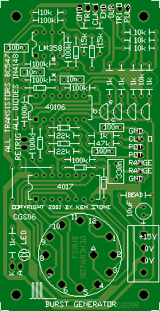
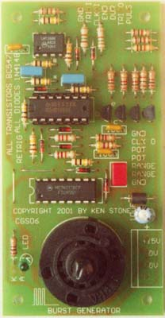

|
Burst Generator for music synthesizers.
This module is a rhythm and timing accessory. It generates a burst of gate or trigger pulses at various speeds as set from a front panel control. At higher speeds it can be used for washboard, maracas or similar rapid-burst percussive effects when connected to the appropriate sound generating device such as a ringing oscillator. At lower speeds it can be used to step a sequencer a certain number of steps or retrigger an envelope shaper. The output pulses are quite narrow when the specified component values are used, and would best be described as trigger pulses in synths that distinguish gates from triggers. Increasing some component values will give longer gate like pulses. How to use this module: Experiment with it. Here's a few ideas to get you started. It can be used alone or cascaded with other burst generators. When cascaded, it could form the basis of a weird rhythm/timing generator. It could be used to step your sequencer through so many notes each down-beat. Fed to the modulation input of a VCO either directly or via an envelope shaper, it will cause a trill at the beginning of each note. It can use either its internal synchronized clock, or an external clock. It can be configured to be retriggerable or not, in which case the event in progress is concluded before it will respond to another. A little on how it works:
The schematic of the Burst Generator. The circuit consists of several distinct blocks. The first are the input shapers, made from IC1A and IC1B and their associated components. These take whatever signal is fed into the module and convert them to signals appropriate for driving the rest of the circuitry. With the values given, the sensitivity is set at around 1.4V, allowing triggering from signals with a +/- 10 volt swing, or with a 0V to +10 volt swing, both of which are common in modulars. The output waveforms of some modules will never fall below the 1.4V level, preventing triggering. This can be solved by increasing the value of the 10k resistor between pin 3 of IC1 and ground to 22k, or higher if needed. IC1A is part of the circuit used to trigger the burst event. Coupled with IC1F and its associated components, it forms a "gate to trigger converter", generating a narrow positive going pulse when the "Trigger" input goes above the 1.4 volt threshold. This pulse is buffered and sent to an output jack for external use if needed. It also sends a pulse to the reset pin the 4017 via a simple AND gate. (More on this later). IC1B is used to process the "External Clock" input. The frequency of the clock signal determines the speed of the output pulses. It can be either an external clock derived from an LFO, sequencer or similar, or from the internal clock circuit, which is normalized to the input jack. Unlike any external clock signal, the internal clock is synchronized so that it generates a series of even length pulses when the burst generator is triggered. It has two ranges, selected by switching in or out a 330nF capacitor. The 2 meg pot specified for speed is not critical, and be anything from 1M to 5M, though obviously this will affect the range. The output of IC1B is fed to the clock input of the 4017 decade counter, and also to an AND gate consisting of a 100k resistor and 1N4148 diode. The output of this AND gate goes to a pulse generator made from IC2E, IC2D and associated components. This pulse generator functions very similarly to the gate to trigger converter mentioned above, converting each cycle of the clock signal to a narrow pulse. This is buffered and sent to an external jack, and is the primary output of this module, namely a burst of pulses. The 4017 decade counter forms the heart of the module. When reset, it counts up to the number selected by the switch connected to its outputs at the speed determined by the clock frequency. If we consider the rotary switch to be set to position "2" as shown in the schematic, the second clock pulse sent to the 4017 after it has been reset will present a logic HIGH to its Clock Inhibit pin (13) via the diode OR gate. This will stop the counter at that point, and any further clock pulses will be ignored. This inhibit signal is also inverted by IC2B and sent to the AND gate preventing the clock signal from reaching the second pulse generator. The inhibit signal also sends the event "End Out" output high. The inhibit signal is reinverted and fed to another diode/resistor AND gate at the Reset input of the 4017, and another output buffer, this one for event "Duration Out". While the burst event is occurring the Clock Inhibit pin of the 4017 is held low via the 100k resistor. IC2B inverts this, presenting a HIGH to the event "Duration Out" buffer, the clock control AND gate and the input of IC2A. This will cause the output of IC2A to be LOW. If the Retrigger switch is closed, this LOW will hold the Reset pin of the 4017 LOW via the diode, preventing the event from being retriggered by any more pulses appearing on the the "Trigger" input, thus preventing retriggering of the burst. How do the resistor/diode AND gates work? First, consider the outputs of both IC1B and IC2B to be HIGH. The input of IC2E, will be pulled HIGH via the 100k resistor. As the cathode of the diode is also being held HIGH, the diode has no effect on the input of IC2E. When the output of IC1B falls LOW, the diode will be forward biased, pulling the input of IC2E LOW with it. Alternately, if the output of IC2B is LOW when the output of IC1B is HIGH, the input of IC2E is pulled low via the 100k resistor as the diode will be reversed biased, blocking the HIGH from IC1B. When the outputs of both IC1B and IC2B are both low, it should be fairly obvious the input of IC2E will also be low. Thus, if either or both inputs are LOW, the output will also be LOW. Summary of inputs, outputs and controls:
Notes:
Construction
 The overlay of the Burst Generator.
Before you start assembly, check the board for etching faults. Look for any shorts between tracks, or open circuits due to over etching. Take this opportunity to sand the edges of the board if needed, removing any splinters or rough edges. When you are happy with the printed circuit board, construction can proceed as normal, starting with the diodes and resistors first, followed by the IC sockets if used, then moving onto the taller components. Take particular care with the orientation of the polarized components, the diodes, LED, electrolytic capacitors and the transistors and ICs. You may want to leave soldering in the LED until you work out what height they will need to be to pass through hole in the panel. When inserting the ICs in their sockets, take care not to accidentally bend any of the pins under the chip. Also, make sure the notch on the chip is aligned with the notch marked on the PCB overlay. Please note that the CMOS chips are static sensitive devices, so make sure you handle them correctly. The rotary switch chosen solders directly onto the PCB. It is deliberately a tight fit. The pins may need tweaking so they go through the holes. Under the nut and washer there is a special washer that allows you to set the maximum range of the switch. Turn the switch fully anti-clockwise, then insert the washer so that its tab goes between holes 9 and 10. The one in the photo does not have the washer installed. Due to the configuration of the board, the direction in which you mount the board will affect the home position of the switch, and thus the flat of the shaft may be pointing in an inappropriate direction for your panel label. File yourself a new flat, if you feel it necessary. The knob on the prototype was such a tight fit no flat was needed. If you wish to use a MOTM style power connector, you will either need to use a 90° connector or to mount it on flying leads. There is insufficient space between the PCB and the panel for a regular connector to fit. When mounting this boards on the front panel, you will find that the height of the switch will determine the required gap. You may prefer to mount the PCB on a sub panel, and just pass the long switch shaft through a smaller hole on the front panel. That will also afford your more clearance for other components. Alternatively, you could use longer stand-offs to give more space.
Parts list This is a guide only. Parts needed will vary with individual constructor's needs. If anyone is interested in buying one of these boards, please check the PCBs for Sale page to see if I have any in stock. Can't find the parts? See the parts FAQ to see if I've already answered the question. Also see the CGS Synth discussion group.  Individual construction of modules based on the original designs of Ken Stone is encouraged. Commercial production of these designs is prohibited without written permission from the designer, Ken Stone. Note that no guarantees are given for any of these designs.
Article, art & design copyright 2001 by Ken Stone
| ||||||||||||||||||||||||||||||||||||||||||||||||||||||||||||||